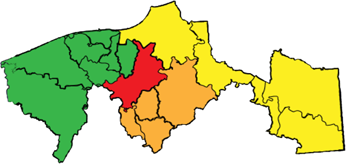

<ion-content padding class="getstart">
  <div>
    
  </div>

  <div class="row">
    <div class="col">
      <button ion-button (click)="getRegionesChontalpa()" color="chontalpa" round  >Chontalpa</button>
    </div>
    <div class="col">
      <button ion-button color="sierra" round (click)="getRegioneSierra()">Sierra</button>
    </div>
    <div class="col">
      <button ion-button color="centro" round (click)="getRegionesCentro()">Centro</button>
    </div>
    <div class="col">
        <button ion-button color="rios" round (click)="getRegionesRios()">Rios</button>
    </div>
  </div>
</ion-content>